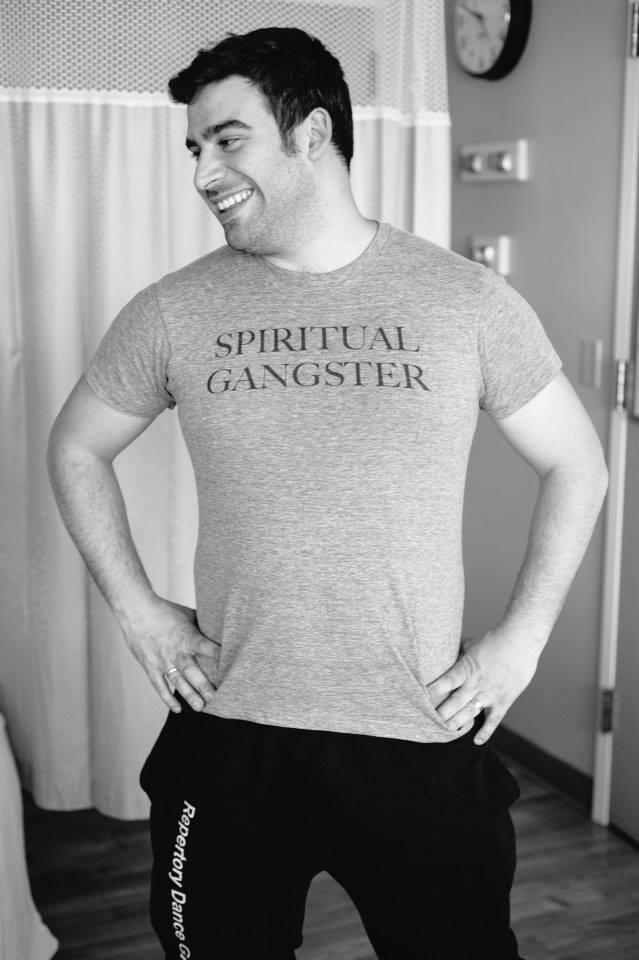
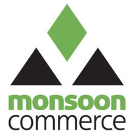
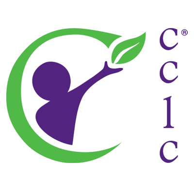

ABOUT MARTY FITCHEN
Hey there! My name is Marty... Fitchen (just like "kitchen" with an F), and I am a dad, husband, younger brother, and son... I am also a creative. Creative work is my professional passion. Whether I am doing the design work myself or managing the design process of others, it brings me so much joy to be a part of revitalizing creative work.
A rarity these days in Portland, Oregon, I am also southeast PDX born and bred. I love Portland! The trees, the rain, the food, the bridges, the air... it has shaped me in ways that I am still discovering today. More than anything, Portland has influenced my creativity. This city is beautiful... and if you ask me, it's beautifully designed. Sure, out-of-towners might get turned around by a few funky roads but Burnside splits the city North | South and the river divides the city East | West. Simple. Smart.
I aim to approach any creative project in this way. And there's nothing like bringing that one idea to fruition. It fuels the drive to create something special. My life has groomed me to be a leader and a team-player. I have been captain of a State-winning soccer team, graphics editor and editor-in-chief of the highest-producing high school newspaper in Oregon, led incoming college students in outdoor activities at Passages (the University of Puget Sound [UPS] outdoor orientation program), and choreographed hip-hop and breakdance routines with the largest student-run organization at UPS (Repertory Dance Group).
Leading various teams helped me dive into the professional world. I have been doing freelance design work since 2007 and have joined a bunch of marketing teams since 2006.
And while this is great, I was beginning to find that I wasn't moving up the way I wanted to, so I needed something else. I first tested the waters of project management by taking the four-course Project Management Certificate Program through Portland State University's continued education program. I was calling it "Project Management Light" during interviews, but this certificate wasn't landing me any PM jobs. Again, I needed something else. This is when I found out about Epicodus. And I thought I should learn how to code. I figured that having a solid coding foundation coupled with my creative work experience would make me a real threat as a front end developer. So here I am, enrolled in the front develper track with Epicodus.
EXPERIENCE

Marketing Specialist
Monsoon Commerce
October 2011 – May 2014 (2 years 8 months) | Portland, OR
- Managed creative content and final asset deliverables for brand campaigns, sales tools, and communications, both print and digital, to ensure they are on time and on budget
- Maintained consistent branding for all communications and campaigns, aligning with corporate marketing objectives and brand guidelines
- Updated website content using Concrete5 content management system
- Managed social media accounts and reported monthly share of voice metrics
- Supported trade shows and event staff by planning onsite logistics, providing creative
materials, and implementing registration microsite
- Developed and maintained strong relationships with various partners and sponsors
E-Marketing Specialist
Monsoon Commerce
August 2010 – October 2011 (1 year 3 months) | Portland, OR
- Executed marketing strategy and created assets for online promotions and advertisements, social media, and interactive media
- Led content creation, deployment, and tracking of email marketing campaigns
- Vetted creative content to the highest standards while adhering to brand guidelines
- Promoted to Marketing Specialist in October 2011

Marcom Specialist
CCLC
October 2008 – August 2010 (1 year 11 months) | Portland, OR
- Designed marketing programs for child care centers at Fortune 1000 companies such as: Pixar, Electronic Arts, Procter & Gamble, and Cisco Systems
- Led rebranding project for 50+ centers, which included renaming, licensing, hiring freelancers for developing logos, and installing signage, van wraps, and decals
- Coordinated launch of new website and managed ongoing administration of content using Drupal
- Designed, produced graphics for, and edited weekly company-wide e-newsletter
- Created year-in-review template and 100+ year-in-review guides annually
Marketing Intern
CCLC
October 2007 – October 2008 (1 year 1 month) | Portland, OR
- Designed marketing programs for child care centers at Fortune 1000 companies such as: Pixar, Electronic Arts, Procter & Gamble, and Cisco Systems
- Led rebranding project for 50+ centers, which included renaming, licensing, hiring freelancers for developing logos, and installing signage, van wraps, and decals
- Coordinated launch of new website and managed ongoing administration of content using Drupal
- Designed, produced graphics for, and edited weekly company-wide e-newsletter
- Created year-in-review template and 100+ year-in-review guides annually
Assistant Account Development Manager
Nike | Sports Knowledge Underground [ SKU ]
August 2006 – January 2007 (6 months) | Portland, OR
- Developed product knowledge base, working with 170+ accounts and reaching 38,000+ user
- Managed 80+ accounts: generated weekly status and monthly booking reports, communicated with clients, coordinated projects, and shipped promotional and technical materials
Busser
Paragon Restaurant & Bar
2005 – 2007 (2 years) | Portland, OR